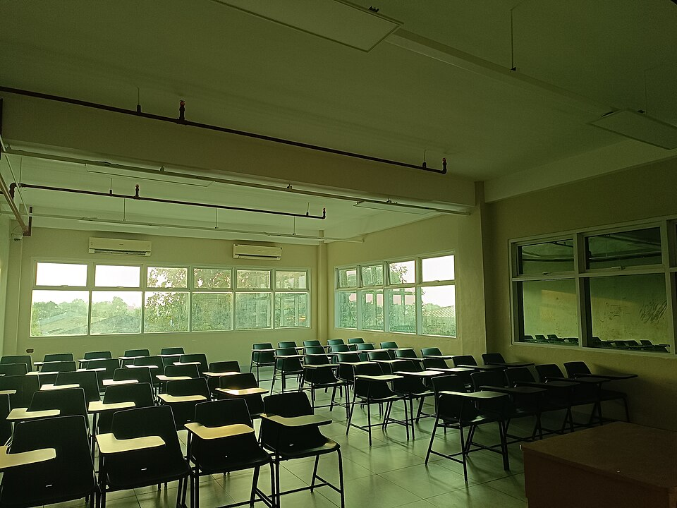

수업 전 비어 있는 교실(자료 사진) · 사진: Yvanille / Wikimedia Commons, CC0
국제학교 성적표(Report Card) 읽는 법 — A~F·GPA·기준표 채점·IB 1~7점·GCSE 9~1, 학부모 상담 전에 볼 것
1. 먼저 “어떤 체계인지”부터 확인한다
성적표를 펼치면 점수보다 먼저 점수 설명(key·legend)을 찾으세요. 보통 성적표 첫 장 아래나 마지막 장, 혹은 학교 안내 문서에 있습니다. 국제학교에서 흔히 쓰는 체계는 크게 다섯 가지입니다.
| 체계 | 주로 쓰는 곳 | 표기 | 읽는 요령 |
|---|---|---|---|
| 문자 등급 + GPA | 미국식 중·고등 | A~F, 4.0 만점 GPA | 과목별 등급이 모여 GPA가 됨. 대학 원서에 그대로 쓰임 |
| 기준표(Standards-based) | 미국식 초등·일부 중등 | 1~4 또는 문자(B·D·P·E 등) | “학년 기준 충족”이 보통 3. 4는 기준 초과 |
| IB MYP | IB 중등(G6~G10) | 기준 A~D 각 0~8 → 최종 1~7 | 총점보다 어느 기준(A~D)이 낮은지가 핵심 |
| IB DP | IB 고등(G11~G12) | 과목별 1~7 (+예상 점수) | 학교가 주는 예상 점수(predicted)가 원서에 쓰임 |
| 영국식 | 영국계 학교 | GCSE 9~1, A-Level A*~E | 현재 등급과 목표(target) 등급의 차이를 봄 |
※ 같은 체계라도 학교마다 구간·명칭·반영 방식이 다릅니다. 이 표는 이해를 돕기 위한 일반적인 정리이니, 우리 아이 학교의 점수 설명을 반드시 함께 확인하세요. 체계별 자세한 구조는 IB DP 점수 완전정복 · IGCSE 과목 선택 가이드 · AP 과목 선택 가이드에 있습니다.
2. 한국 학부모님이 자주 오해하는 지점
· “3이면 60점 아닌가요?” — 기준표 채점에서 3은 대개 학년 기준을 충족했다는 뜻입니다. 4는 “기준을 넘어섬”이라 받기 어렵게 설계된 경우가 많습니다. 모든 과목 4를 목표로 아이를 몰아붙이면 오히려 역효과가 납니다.
· “MYP 5점이면 평균이네요.” — MYP는 과목마다 평가 기준 A~D로 나눠 채점합니다. 최종 점수가 같아도 기준 C(서술·소통)만 낮은 아이와 기준 A(지식)만 낮은 아이는 처방이 정반대입니다.
· “A 받았으니 걱정 없죠.” — 미국식은 숙제·참여 점수가 섞여 등급이 넉넉하게 나올 수 있습니다. 시험(Test) 점수만 따로 보면 실제 이해도와 차이가 날 때가 있습니다. 온라인 성적 포털이 있다면 항목별로 확인해 보세요.
· “코멘트는 인사말이겠죠.” — 선생님 코멘트의 “with support”, “beginning to”, “inconsistent” 같은 표현은 조용한 경고인 경우가 많습니다.
3. 점수 옆 칸 — 학습 태도 항목을 읽는 법
많은 국제학교 성적표에는 과목 점수와 별도로 학습 태도(Learner Profile·ATL·Work Habits·Effort) 칸이 있습니다. 과제 제출, 수업 참여, 협업, 시간 관리 같은 항목입니다. 저희가 지도하면서 보면, 이 칸이 먼저 떨어지고 한 학기 뒤에 점수가 따라 떨어지는 경우가 많습니다.
· 점수 좋음 + 태도 낮음 → 곧 흔들릴 신호. 제출 습관·마감 관리부터 잡습니다.
· 점수 낮음 + 태도 좋음 → 성실하지만 방법이 맞지 않는 상태. 루브릭 해석, 서술형 답안 형식, 영어 어휘 같은 기술적 원인을 찾습니다.
· 둘 다 낮음 → 과목 공부 전에 학교 적응(영어 수업 이해도, 친구 관계, 수면)을 먼저 봅니다. (→ 국제학교 첫 학기 적응 수기)
4. 학부모 상담(PTC) 전에 준비할 것
📝 질문은 3개만, 영어로 적어 가기
상담 시간은 짧습니다. “왜 점수가 낮나요?”보다 다음 행동을 묻는 질문이 훨씬 쓸모 있습니다.
· Which criterion (or skill) lost the most marks this term? — 가장 많이 깎인 기준은?
· If my child changes one thing in the next assignment, what should it be? — 다음 과제에서 한 가지만 바꾼다면?
· How can we support this at home? — 집에서 도울 수 있는 것은?
🙋 학생 주도 상담이라면 아이가 미리 연습
일부 학교는 아이가 직접 자기 학습을 설명하는 학생 주도 상담(Student-led Conference)을 합니다. 잘한 과제 1개, 어려웠던 과제 1개, 다음 목표 1개를 영어 3~4문장씩 말하는 연습을 해 두면 충분합니다. (→ 영어로 생각을 말하는 인터뷰 준비)
📂 과외 선생님과 성적표를 함께 보기
성적표와 선생님 코멘트, 가능하면 채점된 과제 한두 개를 과외 선생님과 공유하세요. 저희 수업에서는 첫 시간에 “깎인 기준 → 원인 → 다음 과제에서 바꿀 한 가지”를 표로 정리하고 한 학기 동안 그 칸을 채워 갑니다. 수학은 알지브라 공부법, 영어는 국제학교 영어 공부법, 과학은 국제학교 과학과외를 참고하세요.
정리
국제학교 성적표는 숫자보다 체계를 먼저 읽어야 합니다. ① 점수 설명(key) 찾기 ② 기준표·MYP는 총점보다 낮은 기준 보기 ③ 학습 태도 칸을 다음 학기 예고로 읽기 ④ 상담에는 “다음 행동” 질문 3개 가져가기. 성적표 한 장을 들고 30분 무료 상담을 신청하시면, 어디서부터 손대야 할지 함께 정리해 드립니다.